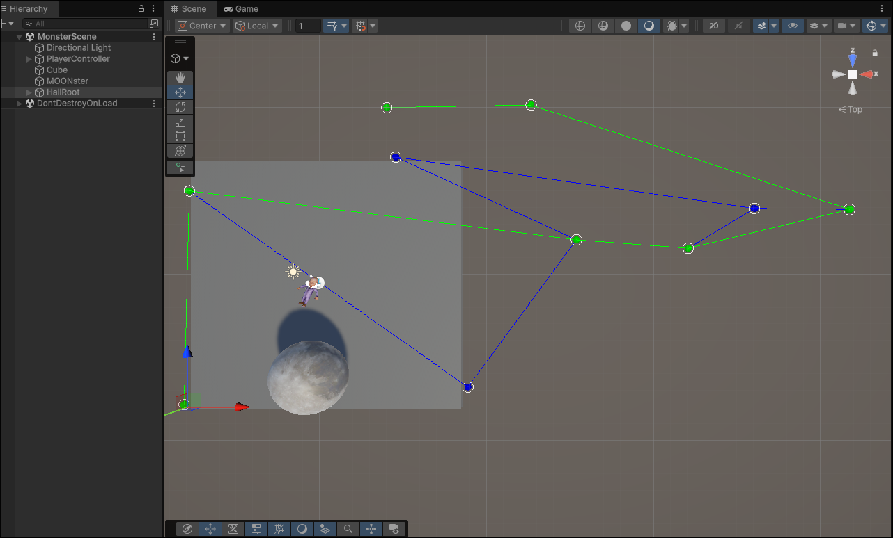

Hello!
I just finished the pathfinding system for BFB. I am using the A* algorithm as it is described on Wikipedia at the moment. It was quite a challenge implementing it but it was pretty interesting. I learned a lot about how I should structure my code and how I can avoid mistakes in future. The main algorithm was actually done a few day ago but I've been fixing bugs and resolving issues for a few days. It seems to be in a usable state now and the way it works is pretty interesting.
The algorithm does a few key things. The first thing it does is it calculates the cost to explore any given point. The way id does this is by adding the distance that would have to be traveled (called g(n)) to a rough estimate of how far it would have to travel to reach the end (called h(n)) Then it adds them together. After it calculates the cost of all the nearby nodes it adds them to a queue based off of the cost. It then continues by checking if the next point in the queue is the goal. If its not the goal the program will check all of that points neighboring points and add them to the queue if the point is already not in the queue. If the point was already in the queue it will check whether the new solution is shorter or longer and discard whichever is longer keeping the shorter path. Eventually when if finds the goal it can find the shortest path by checking which point the goal was connected to and then which one that one was connected to etc. Until it reaches the start position again. The program then returns the finished path.
I implemented a version of that in addition to the queue and at first glance, (with my test case of a straight line) it worked perfectly. After that I added a few more points and then realized it was doing some weird stuff. After a while of trouble shooting, two things happened. Number one, I started researching gizmos and handles which made looking around and moving about the scene much easier. Gizmos are really cool and I'm excited to keep using them as time goes on. Handles are also cool but they are a little more complicated to work with. This is the first time I've written with editor scripts and they were pretty interesting. I'll probably do a post specifically about them when I learn a little more about how they work. The second thing that happened was I got everything fixed. The way I was storing points was awkward which made certain debugging and programming difficult and some parts of my script assumed that indexes were referring to one thing while others were referring to something else. After I resolved that it seems like everything works as intended now.
My solution was not particularly efficient, at least I don't think it was, however it works and for now that's all that matters. While I was debugging things I think I fixed a few glaring issues, however I'm sure there are plenty more. At the time of writing, I'm not sure if the solution is performant enough to run in real time as it runs right on launch so there's not really a way to tell if that's just unity starting up or my algorithm. I'll probably do some more performance testing soon. The other next step is to make it easier to edit paths. Currently the notes have to be created manually and can be moved around with gizmos, however I want to change some of this to make it easier for my team members to create and edit the levels. After that, I want to implement my solution for making things actually follow the path. (currently it just outputs the path to the goal) and I also need to fix my targeting so I don't have to specify nodes that it can go to but rather any arbitrary point.
The next devlog will probably be about that or it'll be about something to do with team management and my progress with training one of our members. Until then, thanks for reading!